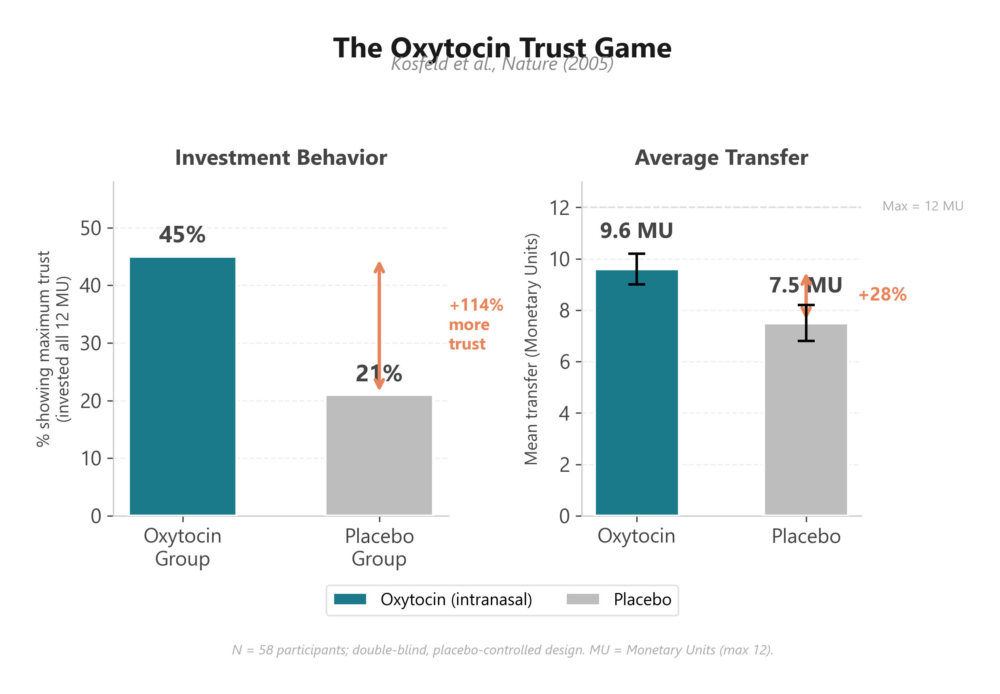

Trust is one of the most vital elements of human relationships. A relationship built on firm trust and faith is the foundation of life and a bulwark for survival. Human society was built on trust and belief. We must trust someone in order to live. The trust that the bank employee managing my retirement account will not secretly siphon off my money; the trust that the surgeon will skillfully remove the tumor from my colon; the trust that the government clerk will not arbitrarily access my personal information; the trust that the subway operator will safely guide the train across the bridge over the Han River — without these, I could not focus on my own life for even a single moment.
The Latin word for trust is fides. From fides came the English word faith. Both words carry the meaning of binding something tightly with a cord. For example, the word fiddle (a nickname for the violin used since the Middle Ages) derives from fides. For a stringed instrument to produce its proper sound, each string must be tightly bound to create the right tension. This is called tuning. Even a Stradivarius violin worth billions would be nothing more than an expensive decoration if its strings were slack.
Oxytocin, the Tuner of Trust
Between people, too, a certain tension in the cord is necessary. This is why we call marital fidelity — the trust between husband and wife — fidelity, a word that shares the same root. In Shakespeare's Othello, it was Othello's distrust of his wife that destroyed what had been a relationship of passionate love. The tragedy began with a tiny seed of suspicion planted by his lieutenant Iago. Othello began to doubt Desdemona's faithfulness. One by one, the taut strings snapped. Blinded by jealousy, Othello murdered his wife. Only after Desdemona's death did he learn that she had been faithful all along. He was consumed by remorse, but a relationship where trust has been destroyed cannot be restored, and the dead cannot be brought back. A broken string cannot simply be knotted and reattached to the instrument. It must be replaced entirely. But a loosened string? For that, you call a tuner. And so the old piano in our living room is reborn as a new instrument through the skilled tightening and adjusting of a professional tuner.
Have you ever watched how a colleague treats others at work? Imagine a workplace filled entirely with people who are unfailingly positive, who overlook shortcomings and heap praise on strengths, who volunteer for the hardest tasks, who are always careful not to inconvenience others, and who respond to mistakes with a reassuring "Hey, it happens" and a pat on the back. That workplace would be nothing short of paradise.
Paul Zak, a professor at Claremont Graduate University and one of the foremost researchers on oxytocin and human relationships, calls oxytocin the "Golden Rule hormone."* He explains it this way: when someone treats me well, my brain produces oxytocin, and that oxytocin compels me to be kind in return. In my view, this aligns more closely with Rousseau's social contract than with Locke's. Human society is built on the mutual trust of its members: "If I help that person, that person will help me." And indeed, helping someone who once helped you when you were in need is simply human nature. This is the law that oxytocin teaches us.
In 2004, Professor Paul Zak became the first to prove that oxytocin makes people more trusting of others. He divided participants into two groups — givers and receivers — and gave the givers ten dollars to start a small-scale trust game. When a giver sent the full ten dollars to a receiver, the receiver's account was automatically credited with triple that amount — thirty dollars. Then it was the receiver's turn to send back whatever amount they wished to the original giver. The most mutually satisfying outcome would be for the giver to send the full ten dollars, and for the receiver to return fifteen of the thirty, leaving both with fifteen dollars each. The catch was that neither player knew how much the other was sending. The experiment was conducted under two conditions: in one, the receiver was told in advance that the giver trusted them and would likely send a large sum; in the other, nothing was said.1
\* The Golden Rule — "Do unto others as you would have them do unto you" — originally comes from the Bible. It is no exaggeration to say that Western social ethics were built upon this precept.
What were the results? Receivers who were told that the giver trusted them and would invest generously showed a fifty percent increase in blood oxytocin levels compared to the control group, and they returned fifty-three percent of the money they received. Those who were told nothing returned only eighteen percent. Simply knowing that someone trusts us is enough to increase oxytocin secretion in the brain. Conversely, when we sense that someone doubts us, we feel offended — that stinging sensation of wounded pride — and become more inclined toward antisocial behavior.1
This is exactly why a child who is about to stop playing and start studying suddenly loses all motivation to study the moment his mother nags, "Go study!" It is why a pitcher who trusts that his fielders will catch anything that gets past the batter can throw with full confidence on the mound. But a pitcher who believes his teammates will drop every ball — even if he throws perfectly — will find his legs trembling on the mound, no matter how astronomical his salary.
Oxytocin: Growing Trust from Trust
Trust begets trust. This is the magic that oxytocin works. But does inhaling oxytocin actually make anyone more trusting and generous toward others? An experiment conducted at the University of Zurich put this to the test. Participants were given oxytocin to inhale and then played an investment game. The rules were simple. A person playing the role of an investor was given a sum of money and encouraged to invest in four other players. The investment amount was entirely up to the investor. For example, if you received 100 euros and chose not to invest a single cent, the game ended immediately and you kept your 100 euros. But if you invested 100 euros in another player, that player's account would be credited with triple the amount — 300 euros. The recipient could then return however much they wished. That meant they could pocket all 300 euros, return 150 (fifty percent), or even give back the full 300. If you were in this game, what would you do? For reference, 100 euros is roughly $110 USD at current exchange rates.
What did the University of Zurich research team find? Did the group that inhaled oxytocin invest more? Exactly as you might predict. The oxytocin group invested seventeen percent more than the control group, and the proportion of participants who invested the maximum possible amount was twice as high in the oxytocin group. If I were an entrepreneur, I would certainly want my investors' oxytocin levels to be elevated.
This initial experiment had a limitation: once the entrepreneur betrayed the investor's trust, there was nothing the investor could do, and the game simply ended. So the Zurich team conducted a follow-up study. They investigated whether participants who inhaled oxytocin would continue trusting and investing even after being betrayed multiple times. Remarkably, even when they did not receive adequate returns on their investments, the oxytocin group continued to invest. Oxytocin, it turned out, is a truly magical hormone that grows trust from trust. And here is what makes it even more fascinating: the very act of being kind to someone raises our own oxytocin levels, and when our oxytocin rises, we become even kinder. A remarkable virtuous cycle.2
These findings carry enormous implications for economics. Today, many marketers are applying them in practice. The growing popularity of cognitive economics has given rise to an entirely new field called neuromarketing — the science of measuring human physiological and neurological signals to gain insight into customer motivation, preferences, and purchasing decisions. It is actively used in creative advertising, product development, pricing, and other marketing domains, employing brain scans and eye-tracking technology to build systematic marketing tools. If you are a business professional preparing for a meeting with a buyer, it might be worth thinking about ways to elevate your buyer's oxytocin. For specific strategies, see the lifestyle tips for boosting oxytocin in Parts 6 and 7.3